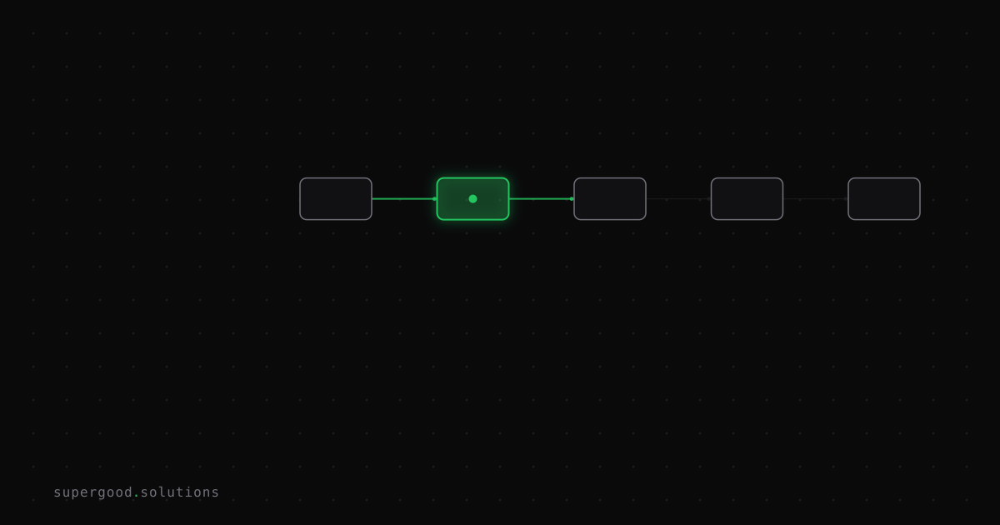

Your Agents Are Looping But Nobody's Steering
TL;DR: Autonomous agent loops don't fail loudly — they drift quietly until a human audits the wreckage. The fix isn't fewer loops; it's deliberate escalation points baked into the architecture before you write a single line of agent code.
Key Insight
Everyone is debating whether agents should loop at all. That's the wrong argument.
The real problem: most enterprise agent pipelines are designed with exactly one human checkpoint — the final output. Everything in between is a black box. The agent reasons, retrieves, calls tools, retries failures, and accumulates errors across a multi-step chain — and your observability layer only sees "task complete" or "task failed."
That's not autonomy. That's trust without instrumentation.
The teams shipping agents that actually stick in production aren't giving agents less autonomy. They're inserting deliberate interrupt points at the moments where confidence is lowest and consequences are highest — and letting the loop run freely everywhere else.
Why Teams Miss This
The default mental model for an "autonomous agent" is binary: either it runs to completion on its own, or a human reviews every step. Teams that hate the second option build the first. And the first option, deployed against real enterprise workflows, eventually does something expensive.
There are four failure modes we see over and over:
- Context collapse: the agent loses the thread of the original task midway through a 10-step chain and starts optimizing for the wrong subgoal.
- Tool overload: the agent has 30 tools available, picks the wrong one under ambiguity, and doubles down rather than escalating.
- No audit trail: nobody can reconstruct why the agent made a given decision, so every post-mortem is a forensics problem.
- Confidence blindness: the agent acts with uniform confidence whether it's reformatting a spreadsheet or drafting a customer-facing legal clause.
According to Gartner, 40% of enterprise applications will include embedded AI agents by end of 2026. Per Deloitte, only 34% of companies are actually redesigning workflows around them — the rest are automating their old human-shaped processes and watching them underperform. The automation architecture isn't keeping up with the deployment pace.
How to Actually Do It
The pattern is called structured escalation, and it has three components:
1. Confidence thresholds as first-class architecture
At each node in your agent graph, evaluate confidence before taking irreversible action. LangGraph's interrupt() primitive makes this explicit — you define the condition, the agent pauses, a human approves or redirects, and state is checkpointed so execution resumes cleanly. This isn't blocking every step; it's blocking the right steps.
# LangGraph interrupt pattern — pause before high-stakes tool call
from langgraph.types import interrupt
def file_action_node(state):
proposed = state["proposed_action"]
if proposed["confidence"] < 0.85 or proposed["irreversible"]:
human_input = interrupt({
"action": proposed,
"reason": "Low confidence or irreversible — needs approval"
})
# execution resumes here after human approves
return apply_action(human_input.get("approved_action", proposed))
return apply_action(proposed)2. Escalation chains, not just approval gates
An approval gate with one approver is a bottleneck. Design a chain: agent flags → on-call engineer → team lead → process timeout with safe default. If nobody responds in N minutes, the agent falls back to the least-harmful option and logs the escalation miss. This keeps loops from hanging forever on human latency.
3. Append-only run logs as observability
Every agent action appends to an immutable log: timestamp, tool called, input, output, confidence score, whether a human was in the loop. This isn't just for debugging — it's the audit trail that makes legal, compliance, and executive sponsors comfortable enough to let loops run longer. Trust is earned incrementally through transparency.
A practical starting point: pick your three highest-stakes tool calls in your current agent pipeline. Add a confidence gate to each. Run for two weeks, measure how often the gate fires, and calibrate the threshold. You'll have real data on where your agent needs steering — not theory.
What We've Learned
The debate about "how autonomous should agents be" is a distraction. Autonomy isn't a dial you set at build time — it's a function of where you've placed your escalation points and how well-calibrated those thresholds are. Start with more gates, tighten them as trust builds, and build the append-only log from day one. The teams losing the loop debate are the ones who never defined what "steered" looks like in the first place.
If you're building multi-agent pipelines right now: map every irreversible action in your workflow before your next sprint. That's your escalation point inventory. Everything else can loop freely.
Sources
- The 2026 Enterprise Multi-Agent Orchestration Blueprint — Pilot failure rates and architecture gap analysis
- Human-in-the-Loop AI Agents: Approval Gates, Interrupts, and Escalation — Interrupt-and-resume pattern explanation
- Human-in-the-Loop AI: 4 LangGraph Patterns That Keep Humans in Control — LangGraph confidence threshold and escalation chain patterns
- LangGraph Human-in-the-Loop Workflows: Interrupts, Approvals — State checkpoint and resume implementation